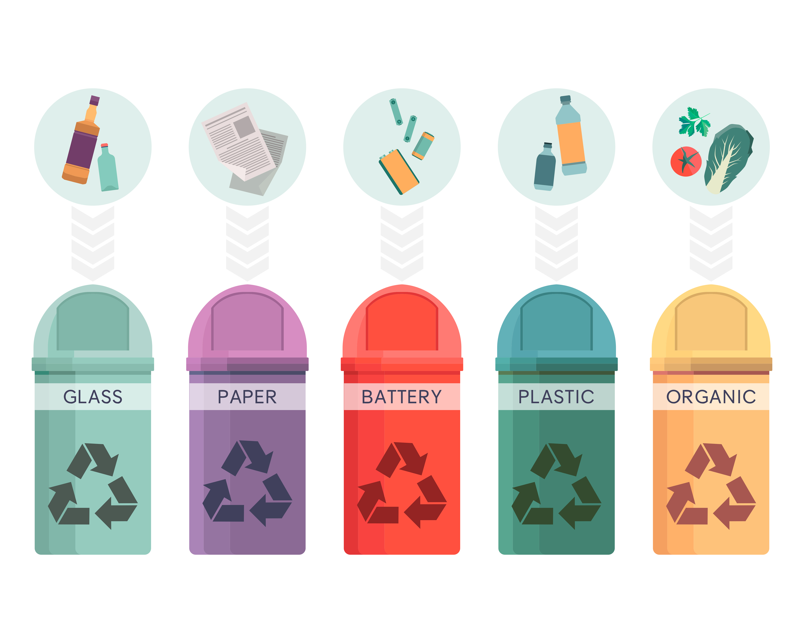

A preservação do meio ambiente é uma tarefa de todos, pois é essencial para garantir um futuro sustentável para as próximas gerações. O meio ambiente é composto por elementos naturais e processos biológicos, físicos e químicos que sustentam a vida na Terra

Plantar árvores é uma das maneiras mais simples e poderosas de cuidar do nosso planeta. Cada árvore que plantamos ajuda a purificar o ar, melhorar a qualidade da água, fornecer abrigo para animais e combater as mudanças climáticas.

A poluição é um dos maiores desafios ambientais que enfrentamos hoje. Ela afeta o ar que respiramos, a água que bebemos e o solo onde cultivamos nossos alimentos. Seja causada por resíduos industriais, plásticos ou gases de efeito estufa, a poluição coloca em risco a saúde do planeta e das futuras gerações.
Noticias

Reciclagem e as Cores das Lixeiras: Facilitando a Separação de Resíduos
A reciclagem é uma prática essencial para reduzir o impacto ambiental dos resíduos gerados diariamente. Separar os materiais recicláveis de forma correta ajuda a diminuir o volume de lixo nos aterros e promove o reaproveitamento de recursos. Um sistema eficiente de reciclagem começa com a separação dos resíduos nas lixeiras coloridas, cada uma destinada a um tipo específico de material:
 Foto por SVSTUDIOART.- Azul: Papel e papelão
- Vermelha: Plásticos
- Verde: Vidro
- Amarela: Metais
- Marrom: Resíduos orgânicos
- Cinza: Rejeitos, ou seja, materiais que não podem ser reciclados
Separar corretamente os resíduos facilita o processo de reciclagem e contribui para um meio ambiente mais sustentável, economizando recursos e energia.
Vamos Reciclar!
Clique primeiro no lixo e depois na cor da lixeira correspondente.
Lixo
Papel
Metal
Plástico
Vidro
Orgânico
Não Reciclável
Lixeira
Acertos: 0 de 6